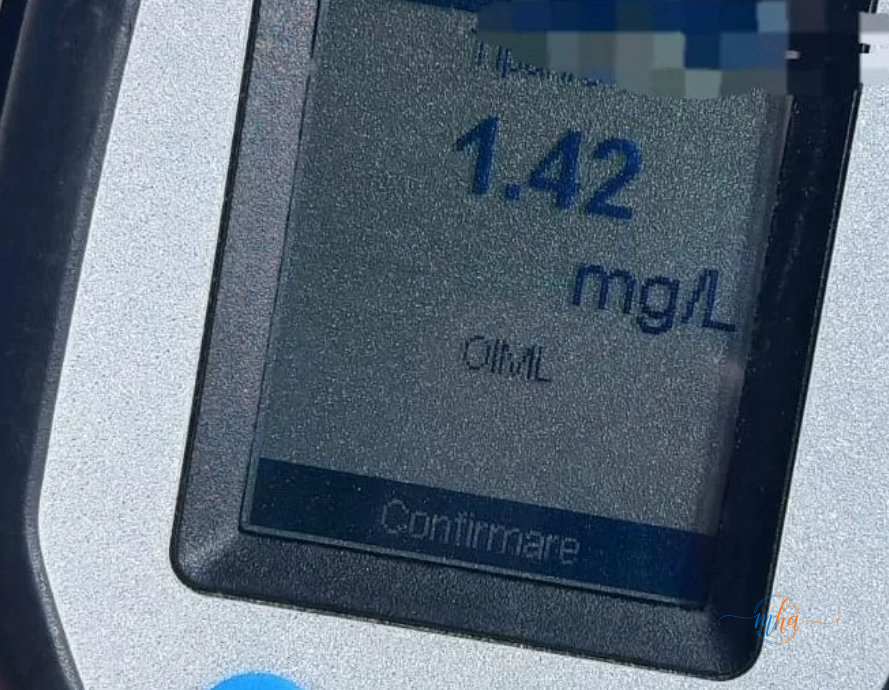

- Acțiune a polițiștilor IPJ Mehedinți — Vânju Mare pentru prevenirea accidentelor rutiere
- Doi bicicliști opriți: bărbați de 51 de ani (Obârșia de Câmp) și 24 de ani (Dârvari)
- Etilotest: 1,42 mg/l și 1,01 mg/l alcool pur în aerul expirat
- Ambii sancționați contravențional
- Polițiștii avertizează: bicicletele nemotorizate nu sunt la adăpost de consecințele alcoolului la volan
Polițiștii Inspectoratului de Poliție Județean Mehedinți, din cadrul secției din Vânju Mare, au desfășurat o acțiune specifică de control în trafic, axată pe prevenirea accidentelor rutiere produse sub influența alcoolului. Acțiunea s-a soldat cu depistarea a doi bicicliști care circulau pe drumurile județului în stare avansată de ebrietate.
Conform datelor furnizate de IPJ Mehedinți, cei doi bărbați — în vârstă de 51 de ani, din Obârșia de Câmp, respectiv 24 de ani, din Dârvari — au fost opriți în trafic și testați cu aparatul etilotest. Rezultatele au fost alarmante, confirmând că ambii consumaseră cantități semnificative de alcool înainte de a urca pe bicicletă.
Valorile etilotest — cifre care spun tot
Testarea cu aparatul etilotest a indicat valori cu mult peste orice limită acceptabilă: 1,42 mg/l alcool pur în aerul expirat în cazul primului biciclist și 1,01 mg/l alcool pur în aerul expirat în cazul celui de-al doilea. Ambele valori indică un risc major pentru siguranța rutieră, nu doar pentru cei doi, ci și pentru ceilalți participanți la trafic.

primul biciclist
al doilea biciclist
sancționați
Pentru comparație, limita legală pentru conducătorii auto în România este de 0,00 mg/l alcool în aerul expirat (toleranță zero), iar valoarea de 0,40 mg/l alcool în aerul expirat corespunde limitei de 0,80 g/l în sânge, prag peste care se angajează răspunderea penală pentru șoferii de autovehicule. Valorile înregistrate de cei doi bicicliști depășesc cu mult aceste praguri de referință.
Bicicleta — nu te protejează de consecințele alcoolului
Un mit des întâlnit în rândul populației este că bicicliștii nu pot fi trași la răspundere pentru consumul de alcool, întrucât bicicleta este un vehicul nemotorizat. Această concepție este greșită și periculoasă.
Astfel de comportamente pot avea consecințe grave, chiar dacă este vorba despre vehicule nemotorizate. Bicicliștii aflați sub influența alcoolului reprezintă un pericol atât pentru ei înșiși, cât și pentru ceilalți participanți la trafic.
— IPJ Mehedinți
Legislația română prevede că și bicicliștii pot fi sancționați contravențional pentru conducerea sub influența alcoolului. Mai mult, dacă un biciclist beat provoacă un accident soldat cu victime, poate fi tras la răspundere inclusiv penal. Oboseala reflexelor, pierderea echilibrului și incapacitatea de a anticipa pericolele sunt efecte directe ale alcoolului — indiferent de tipul vehiculului condus.
IPJ Mehedinți — acțiuni continue pentru siguranța rutieră
Acțiunile polițiștilor IPJ Mehedinți vizează în permanență toți participanții la trafic, inclusiv bicicliștii și pietonii, nu doar conducătorii de autovehicule. Zona Vânju Mare și comunele din jur — printre care Obârșia de Câmp și Dârvari — sunt incluse în arealul de patrulare și control al poliției rutiere din județ.
Mesajul autorităților este clar: consumul de alcool înainte de a circula pe drumurile publice, indiferent de tipul vehiculului, este periculos și sancționabil. Polițiștii vor continua acțiunile de control pentru a preveni tragediile rutiere și a proteja toți participanții la trafic.
- Amendă contravențională — între 1.305 și 2.900 de lei (clase diferite de sancțiuni)
- Reținerea bicicletei ca mijloc de transport implicat în abatere
- Răspundere penală dacă accidentul produs are victime
- Consecințe grave pentru propria sănătate în caz de cădere sau coliziune